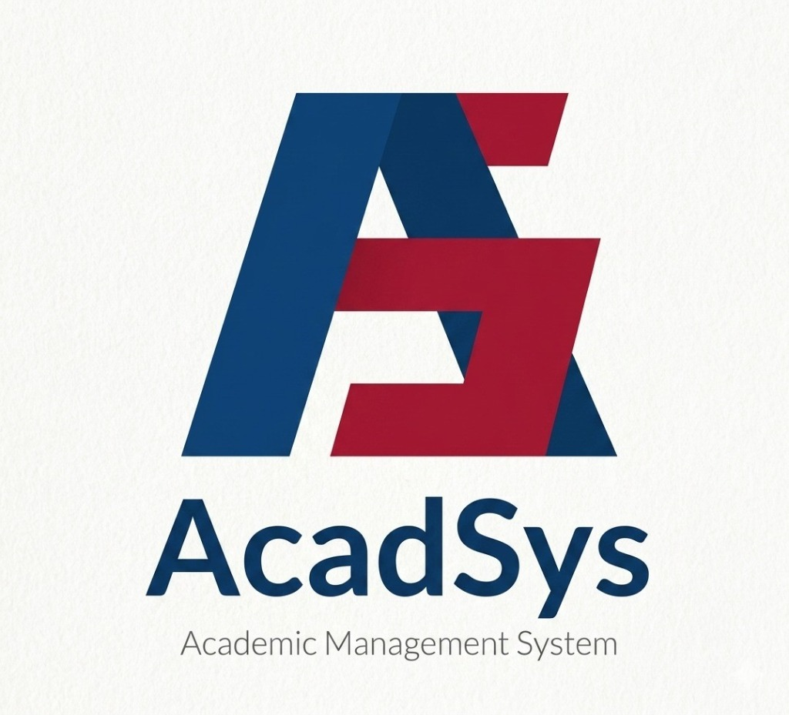

ACADSYS
Design and Implementation of an Offline-First Academic Management SystemProblem Addressed
Unreliable internet connectivity and disconnected administrative workflows in secondary schools in Cameroon create severe data loss, scheduling conflicts, and operational delays.
Architectural Solution
Engineered an offline-first Progressive Web Application (PWA). Utilizes IndexedDB and Service Workers for full offline capability, synchronizing bi-directionally with a central Node.js, Express, and SQLite backend whenever connectivity is restored.
ACADSYS Offline-First Synchronization Architecture
Client Layer (React & Tailwind PWA)
Instantaneous UI response & service worker asset caching
Local Persistence (IndexedDB)
Full offline transactional CRUD without network connectivity
Background Sync Engine
Automatic bi-directional state synchronization on reconnect
Central API & Storage
Node.js, Express, SQLite with GitHub Actions CI/CD deployment